경쟁 지형COMPETITIVE LANDSCAPE · 2026.05 최신 모델
세 그룹, 공통으로 빠진 하나
"내가 들은 소리"를 입력으로 쓰는 제품은 없다
A
프리미엄 이어폰 + AI 비서
지금 묻는 것에 답
Galaxy Buds 4 Pro
Bixby·Gemini·Perplexity · 22개 언어 통역 · ANC 2.0
A사 AirPods Pro 3
Apple Intelligence · 실시간 통역 · 보청기·심박
G사 Pixel Buds Pro 2
Gemini Live · 앱 연동 · 제스처
⛔지나간 소리·내부음 기록 없음 · AI가 자사 폰에서 작동(갤럭시 폰 필수)
B
AI 기록 웨어러블
주변을 상시 녹음
Plaud NotePin
별도 핀/목걸이 · 주변 발화 녹음·요약
Limitless · Bee
펜던트/밴드 · 2025 Meta·Amazon 인수
Viaim RecDot · Otter
AI 이어버드(최근접) · 회의 봇 전사·요약
⛔별도 기기 · 외부 발화만(내부음 ✗) · 상시녹음 부담 · 빅테크 흡수
C
통화·노트·브리핑 SW
디바이스 없이 사후 정리
Call Notes
통화 요약·액션아이템→캘린더 (영어 전용)
Magic Cue · 에이닷
앱·메일·통화 → proactive 제안·브리핑
클로바노트 · 다글로
회의/통화 녹음·전사·요약
⛔입력이 폰통화·앱데이터 한정 · 끝난 뒤 요약(실시간 ✗) · proactive도 재료는 텍스트
→
셋 다 빠진 것 = "내가 들은 소리를, 실시간으로 다시 쓰는 것"
차별점5 FUNCTIONS · ONE INPUT
결국, "내가 들은 소리"다
경쟁이 못 가진 입력 하나 → 5가지 기능
🎙️
INPUT
내가 들은 소리
내부음(듣던 콘텐츠)까지 — 경쟁이 쓰지 못하는 입력 하나
↓ 다섯 기능으로
1
🎧
듣던 소리까지, 직전 30초
내부음+외부음 30초 롤링 · ANC 재사용(추가 부품 없음)
VS A=지나간 소리 없음 · B=외부음만
2
🌐
폰 없어도 사용
버즈가 독립 AI 단말 · 인터넷 되는 어떤 기기로도 연결(앱 0)
VS 경쟁=자사 폰·앱 필수
3
🧭
의도를 읽어 분기
곡 식별(Shazam) · 요약(Gemini) · 행동 실행(Galaxy AI)
VS 경쟁=STT→요약 한 갈래
4
👁️
들은 것을 시각화
타임라인·파형으로 화면 표시 · "들리는 소리, 보이는 기록"
VS A=기록 없음 · B=텍스트 나열
5
🔗
먼저 제안하는 브리핑
들은 소리 + 캘린더·메일을 묶어 proactive 제안
VS Magic Cue·에이닷=텍스트
요약MATRIX
한눈에 비교
BudsAI만 전 항목 충족
🅰 이어폰 + 비서
AirPods Pro 3 · Pixel Buds Pro 2 · Galaxy Buds 4 Pro
🅱 기록 웨어러블
Plaud · Limitless · Bee · Viaim · Otter
🅲 통화·노트 SW
Call Notes · Magic Cue · 에이닷 · 클로바노트 · 다글로
| 🅰이어폰 | 🅱기록기 | 🅲통화 SW | BudsAI우리 | |
|---|---|---|---|---|
| 지나간 소리 실시간 회상 | ✗ | △상시녹음 | ✗사후 | ✓30초 롤링 |
| 내부음(듣던 콘텐츠) 캡처 | ✗ | ✗ | ✗ | ✓ |
| 자사 폰 없이 사용 | ✗ | △ | ✗ | ✓테더링 |
| 의도별 소리 식별 | ✗ | ✗ | ✗ | ✓ |
| 들은 소리를 시각화 | ✗ | △ | △텍스트 | ✓ |
| 들은 소리로 먼저 제안 | ✗ | ✗ | △텍스트 | ✓ |
| 별도 기기 불필요 | ✓ | ✗ | ✓ | ✓ |
| 상시녹음 부담 없음 | ✓ | ✗ | ✓ | ✓ |
✓
전 항목을 충족하는 건 BudsAI뿐
결론WHY SAMSUNG
마지막 차별점, SAMSUNG
듣고 · 보고 · 엮는 경험을 한 흐름으로 완성하는 조건
01
🌐
끊김 없는 흐름
버즈로 듣고 → 폰·워치·TV로 보고 → 다시 버즈로. 하나의 생태계가 잇는다.
02
🧩
일상 정보와 결합
들은 소리 + 캘린더·메일·갤럭시 서비스가 한자리에서 묶인다.
03
✨
프리미엄 하드웨어
Galaxy Buds 4 Pro 위에 바로 적용 · 별도 기기 0.
✦
입력 기기(버즈) · 결과 화면(폰·워치·TV) · 일상 정보 — 셋을 모두 가진 곳은 삼성


